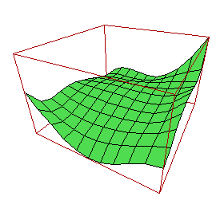

This long section explains
The best part of EULER is its graphics capability. There are two screens, the text screen and the graphic screen. Text output automatically displays the text screen, and graphic output displays the graphic screen. One may also switch to the graphic screen by pressing TAB on input or with the command
>shg;
There are two coordinate systems. The screen coordinates are a 1024x1024 grid with (0,0) in the upper left corner. Furthermore, each plot generates plot coordinates mapping a rectangle of the plane to the screen with the smallest x value left and the smallest y value at the bottom. To be precise, the rectangle is mapped to the screen "window", which may only cover a part of the display area. See below for more information on windows.
We will start with a few practical functions. These functions are defined in utility files and build on more primitive graphic routines, which we explain later. By the way, you can use
>help function
to get additional help on a function.
The plotting of a user defined function f(x,...) can be done with
>fplot("f",a,b)
>fplot("f",a,b,c,d)
>fplot("f",a,b,c,d,n)
>fplot("f",a,b;...)
The extra parameters ... are passed to f (in addition to the function value, of course). n is the number of subintervals. c and d are the y-range. If not c<d then the y-range is determined automatically. If a and b are omitted, as in
>fplot("f";...)
or
>fplot("f")
then the plot coordinates of the last plot are used.
You can use an expression instead of a function name.
>fplot("x^2",-1,1)
This will plot the function x^2 on the interval [-1,1].
After you have plotted a function, you can zoom in with the mouse by
>setplotm(); fplot("f");
The function setplotm switches to the graphics screen, and you can select a square region of the screen.
A 3D-plot of a function can be done with
>f3dplot("f")
f must be either a function name of a function f(x,y), or an expression in x and y. Additional parameters are the x-y-range and the number of grid points in each dimension.
>f3dplot("f",xmin,xmax,ymin,ymax,nx,my)
As above, additional parameters of parameters after a semicolon ";" are passed to f (in addition to x and y). You can get other kind of plots with
>f3d("f");
>f3daxis("f");
>f3dpolar("f");
>f3daxispolar("f");
>fcontour("f");
In all cases "f" may be a valid EULER expression using x and y (and other global variables), or a function. Especially nice is the function
>fcd("f")
which plots contour and density of a function. You may pass the number of grid points, the x-y-ranges and the number of level lines as additional parameters, e.g.
>fcd("x*y",50,-2,2,-2,2,31);
This will plot the function with 50 grid points and 31 level lines in the specified x-y-range.
>title("text")
draws a title above the plot. To label a specific position in the last plot, use
>label("text",x,y)
x and y are plot coordinates.
The title function uses the elementary
>ctext("text",[col,row])
which plots the text centered at screen coordinates (col,row).
>text("text",[col,row])
plots the text left justified. The width and height of the characters can be asked with
>textsize()
returning the vector [width,height] in screen coordinates. There is also
>rtext("text",[col,row])
which aligns text to the right. Vertical text can be printed with
>vtext("text",[col,row]);
vctext would center the text vertically, and vrtext would align it at text end. The functions vutext, vcutext and vrutext work the same way with text going from bottom up.
To compute from screen coordinates to plot coordinates, use
>{x,y}=fromscreen(c,r)
and for the other direction, use
>{c,r}=toscreen(x,y)
We know describe the basic built-in functions. If x and y are 1xN vectors, the function
>plot(x,y)
connects the points (x[i],y[i]) with straight lines and plots these lines. It first clears the screen and draws a frame around the screen window. The plot coordinates are chosen such that the plot fits exactly into the screen window. This behavior is called auto-scaling. You can set your own plot coordinates with
>setplot(xmin,xmax,ymin,ymax)
(or setplot([...])). The auto-scaling is then turned off. To turn it on again, use
>setplot()
Force EULER to use a square coordinate window with
>keepsquare(1)
Correspondingly keepsquare(0) will turn this off. This does not affect the physical appearance of the plot window. But the width in the y-range will be the same as in the x-range.
>scaling(flag)
will stop (flag=0) or resume (flag=1) the autoscaling of the next plot. If scaling is off, then the plot region of the last plot (or the one set with setplot) is used.
By the way, the plot() command with or without arguments returns the plot coordinates; i.e., a vector [xmin,xmax,ymin,ymax].
The screen window is a rectangle on the screen which can be set by
>window(cmin,cmax,rmin,rmax)
(or window([...])) in screen coordinates. The function without arguments returns the current window area. The window area is used to clip the drawing in the plot and mark commands. You can use the clip command with the same arguments to clip to a region. The command unclip will clip to the complete window. It is part of the reset command.
If x is a 1xN vector and A MxN matrix,
>plot(x,A)
plots several functions. The same is true with
>plot(B,A)
if B is a MxN matrix. In this case, the plot is done for corresponding rows of A and B.
The graphic screen is cleared by the plot command. This can be turned off with
>hold on;
or
>holding(1);
To turn holding off,
>hold off;
or
>holding(0);
is used. The function holding returns the old state of the holding flag. This is a way to draw several plots into the same frame. Combining window and holding is a way to draw several plots in several windows on the screen.
>xplot(x,y)
works like plot but does also show axis grids. Actually, xplot has default parameters grid=1 and ticks=1, which determine, if a grid is plotted and axis labeling is done. Thus
>xplot(x,y,1,0)
does no ticks. Also
>xplot(x,y,ticks=0)
may be used for the same purpose (see in the section about EULER programming for details on default parameters).
>xplot()
plots the axis and ticks only.
You may set vertical to 1, if you wish vertical axis labels for the y-axis. You should call shrinkwindow again after doing so, because you will not need so much space to the left of the picture now. Put the command into EULER.CFG to make it permanent (after loading UTIL). However, this does make sense only if you have chosen a small outline font like (O)Courier at about 40 lines per page.
>xplot(z)
will plot xplot(re(z),im(z)), if z is a complex vector.
>cplot(z)
ca be used to plot a grid pattern, if z is a complex matrix.
>histogram(data,n)
will plot a histogram of the data distribution. It will divide the interval into n equally spaced parts and plot the number of d[i] in each subinterval.
You should use
>shrinkwindow()
if you intend to use labels (ticks) on the axis. This leaves some space around the plot.
>fullwindow()
resizes the plots to the full size. You may also set the x axis grids on your own with
>xgrid([x1,x2,x3,...])
or
>xgrid([x1,x2,x3,...],f)
the latter producing digits at the edge of the plot (ygrid(...) works respectively). Actually, these functions are defined in UTIL.
To plot with logarithmic scale is done in the following way. Assume the data is x and y, both 1xn arrays. To get a logarithmic plot of y, use
>ylogplot(x,y)
Make sure, y is in the positive range. There is also xlogplot and xylogplot for logarithmic scale in x and in both coordinates. Moreover, there is xlogmark etc.
>plotarea(x,y)
sets the plot area for the next plot like plot(x,y), but it does not actually plot.
>reset
is a function in UTIL, which calls shrinkwindow, hold off and some other stuff to reset the plot coordinates to default values.
If a color monitor is used, EULER can produce colored plots. The plot color can be modified with
>color(n)
where n=1 is black, and n=0 is white. Other colors depend on your system settings. Color numbers range from 0 to 15. The textcolor, wirecolor and framecolor can be set the same way.
You can use your own colors. In Windows, you can do that permanently in a dialog. Colors will be saved for the next session. You can also change a color in a program for one session with
>setcolor(n,red,green,blue)
where red, green, blue compose the color. To reset all colors to normal, use
>resetcolors()
Note that 1 is the normal black color, and 0 is supposed to be white. You should normally not change these two colors.
There is the possibility to use dotted and dashed lines, or even invisible lines erasing the background. This is done with one of the commands
>style(".")
>linestyle(".")
("-" for solid lines, "--" for dashed lines, "->" for arrowed lines and "i" for white lines). The function linestyle, also
>linestyle("")
returns the previous line style. The lines can have a width greater than 0. This is set with
>linewidth(n)
The function returns the previous setting.
The command
>mark(x,y)
works like plot. But it does not connect the points but plots single markers at (x[i],y[i]). The style of the marker can be set with one of the commands
>style("mx")
>markerstyle("mx")
for a cross. Other styles are "m<>" for diamonds, "m." for dots, "m+" for plus signs, "m[]" for rectangles and "m*" for stars. The function returns the previous marker style. The markersize can be set with
>markersize(x)
in screen coordinates (0..1024). There is also the command
>xmark(x,y)
which works like xplot.
A rectangle area of the screen can be filled with
>bar([xleft,yup,xright,ydown])
The coordinates are screen coordinates. But there is the utility function
>plotbar(x,y,w,h)
which plots in plot coordinates. The style of the bar is determined by the barcolor(c) and the barstyle(s) functions. The color is an index from 0 to 15 and the style is a string. Available are "#" for solid, "O#" for solid framed, "#" for framed, "/", "\" and "\/" for hatched bars.
The usage of this function is a bit critical. You have to set the plot window first, then determine the x and y of the lower left corners, finally the heights and widths of the bars. E.g.
>setplot(1,30,0,5); x=1:29; y=log(x); plotbar(x,0,1,y);
There is a function to do histograms.
>histogram(data,n)
which makes a histogram (value distribution) of the given unordered data.
The easiest way to produce 3D-plots is
>mesh(Z)
If Z is a NxM matrix, its elements are interpreted as z-values of a function defined on a grid of points (i,j). The plot is a three dimensional plot with hidden lines of the points (i,j,Z[i,j]). It is auto-scaled to fit onto the screen window. The point (1,1,z[1,1]) is the front left point.
One can turn off the different fill styles mesh uses for the two sides of the plot with
>twosides(0)
This function works also for solid plots described below. It is a faster way than the use of triangles to avoid seeing the errors, that the mesh plot sometimes makes. By the way, both functions return the old values of the flags.
>meshbar(Z)
works similar as mesh, but plots the heights of Z as square columns.
There is a function which produces matrices X and Y such that X[i,j] and Y[i,j] are the coordinates in the plane of a point in a rectangular grid parameterized by (i,j). This function is
>{X,Y}=field(x,y)
where x and y are row vectors. Then X[i,j] is equal to x[i] and Y[i,j] is equal to y[j]. So you can easily generate a matrix of function values; e.g.,
>Z=X*X+Y*Y
However, you can do this more easily, by defining y as a column vector, x as a row vector. Then
>Z=x*x+y*y
will work just as expected. This is due to the rules for operands, which operate on matrices. Even a more complex expression, like x*y+3*x+y^3 would be evaluated correctly.
A nicer way to plot a surface is
>solid(x,y,z)
or
>framedsolid(x,y,z)
where x, y and z are NxM matrices. The surface parameters are then (i,j) and (x[i,j],y[i,j],z[i,j]) are points on the surface. The function would work, if x is a row vector, y a column vector, just as an operator.
>framedsolid(x,y,z,1)
will scale the plot to fit into a cube of side length 2 (the unit cube).
The surface should not self intersect; or plot errors will occur. The surface is projected onto the screen in central projection, with the view centered to (0,0,0). You can set the viewing distance, a zooming parameter, the angles of the eye from the negative y- to the positive x-axis, and the height of the eye on the x-y-plane, by
>view(distance,tele,angle,height)
(or view([...])). view returns the previous values and view() merely returns the old values. framedsolid has a default parameter scale, which scales the image to fit into a cube with side length 2*scale, centered at 0, unless scale=0, which is the default value (no scaling). Thus
>framedsolid(x,y,z,2)
will scale the plot so that |x|,|y|,|z|<=2.
>wire(x,y,z)
and
>framedwire(x,y,z)
work the same way, but the plotting is not solid. If x, y and z are vectors, then a path in three dimensions is drawn. The color of the wires is set by
>wirecolor(c)
If you add an extra value to framedwire or framedsolid like in
>framedwire(x,y,z,scale)
the plot is scaled to fit into a cube of side length 2*scale. The function
>{x1,y1}=project(x,y,z)
projects the coordinates x,y,z to the screen and is useful for labeling 3D plots. There is a function
>scalematrix(A)
which scale the matrix A linearly so that its entries are between 0 and 1.
>solid(x,y,z,i)
is a special form of solid. If i=[i1,...,in], then the ij-th row of (x,y,z) is not connected to the ij+1-st row. I.e., the plot consists of n+1 parts.
To get a plot of a cloud of points, use one of the following
>mark3(x,y,z)
>framedmark3(x,y,z)
>framedmark3(x,y,z,scale)
x, y and z must be 1xn vectors.
A special feature are stereo plots. This will generate two pictures and there is a special technique to view them as one stereo picture. You look through the image, so that you see three images, and then you focus. The middle image will appear to be stereographic. To draw a stereo wire plot, use
>stereo("framedwire",x,y,z,scale)
In general, the first parameter is the function, which does the plot, and further parameters are passed to this function.
A contour plot of a matrix is produced with
>contour(A,[v1,...,vn])
The contour lines are then at the heights v1 to vn. The interpretation of A is the same as in mesh(A).
A density plot is a plot of a matrix, that uses shades to make the values visible. It can be made with
>density(A)
The integer parts of the values are cut off. So the shades run through the available shades, if A runs from 0 to 1. A can be scaled to 0 to f with
>density(A,f)
f=1 is the most important value. The shades can be controlled with
>huecolor(color)
Any positive color produces shades in that color with varying intensity.
The color 0 uses a rainbow color scheme. The color 1 is for gray scale shading.
>solidhue(x,y,z,h)
makes a solid view with shades. h are the shading values with the same interpretation as in density. Thus h must be a matrix of the same size as x, y and z. Each point h[i,j] controls the color at the grid point (x[i,j],y[i,j],z[i,j]).
>framedsolidhue(x,y,z,h,scale,f)
works like a mixture of framedsolid and solidhue. scale=0 and f=1 are the default values.
It is possible to sample coordinates from the graphics screen with the mouse.
>mouse()
displays the graphics screen and a mouse pointer and waits for a mouse click. It returns a vector [x,y] which are the plot coordinates of the clicked spot. Using
>{x,y}=select()
returns several x coordinates and y coordinates at the points, which the user selected by the mouse. The selection stops, if the user clicks above the plot window.
You can animate a sequence of plots. These plots are stored in a sequence of pages. To start an animation, you have to clear the pages with
>deletepages();
Then, you can add the current plot to the sequence with.
>addpage();
To view a specific page, use
>showpage(n);
You will then see this page (even if you draw something), until you either delete the sequence of pages, or call
>showpage(0);
or until the command line editor is invoked. To hold a page on the screen, use
>showpage(n); wait(180);
This should all be done in a program. An example of such a program is
>rotate("function",d,n;...)
which rotates a 3D-plot around the vertical axis. The plot is generated with any 3D function. d is the time in seconds between two pages and n is the number of frames. An example would be
>rotate("f3dplot";"x*y");
Note the use of the semicolon. If you want to create your own animation, you can use the function animate() to run it. The page generation can be done with the map function
>map("f",vector);
"f" is a function, which contains all the plots, depending on a parameter, and an addpage(). The map command is called with the vector and will run "f" through all parameters in the vector. Do not forget to call deletepages() before you create an animation.
All Euler version can save graphics in Encapsulated Postscript (EPS) format, a feature, which has been programmed by Eric Boucharé. The Windows version can export Windows Metafiles to the clipboard, and save Windows bitmaps on disk. Moreover, there is a special Euler metafile format, which might be used for external filters. It is documented in the source code of Euler.
To use the postscript export, there is the command
>postscript "filename.ps"
This command will overwrite any existing file with this name. The size of the Postscript screen can be set with
>pswindow([width,height])
The default is 15x15 cm.
You can save the graphics screen in the internal Euler metafile format with the command
>meta "filename.met"